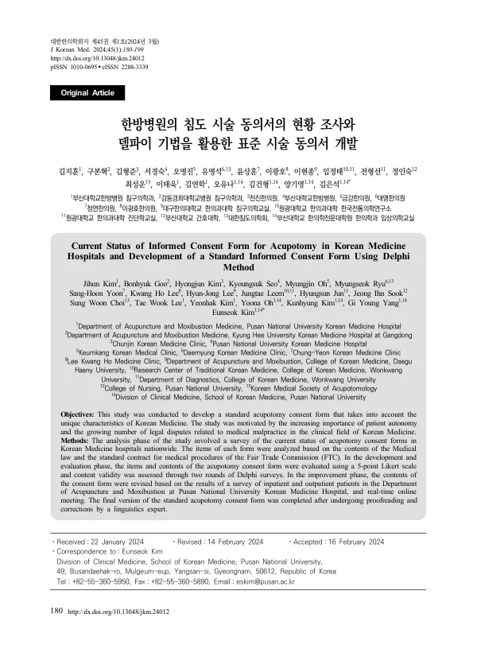

Current Status of Informed Consent Form for Acupotomy in Korean Medicine Hospitals and Development of a Standard Informed Consent Form Using Delphi Method
Kim J, Goo B, Kim H, Seo K, Oh M, Ryu M, Yoon SH, Lee KH, Lee HJ, Leem J, Jun H, Jeong IS, Choi SW, Lee TW, Kim Y, Oh Y, Kim K, Yang GY, Kim E
Journal of Korean Medicine 45(1):180-199

첫 장 · 오픈액세스First page · open access
논문 소개Summary
전국 수련 한방병원의 침도 시술 동의서 실태를 조사하고 표준 동의서를 만든 연구입니다. 2023년 10월 기준 29개 병원 가운데 동의서를 쓰는 곳은 6곳(21%)뿐이었고, 그 항목들도 의료법과 공정거래위원회 표준약관이 요구하는 내용을 다 담지 못했습니다. 예비 항목 27개를 놓고 전문가 12명이 델파이 두 차례와 실시간 논의를 거쳐 내용타당도비율과 수렴도, 합의도 기준을 만족하는 항목을 추렸고 이를 바탕으로 표준 동의서를 완성했습니다. 조사 대상이 수련 한방병원에 한정되고 성인에게만 적용된다는 점은 한계로 남았습니다.
A survey of informed consent forms for acupotomy across Korean medicine teaching hospitals, followed by development of a standard form. As of October 2023, only 6 of 29 hospitals (21%) used a consent form at all, and their items did not fully cover what the Medical Service Act and the Fair Trade Commission's standard contract require. Twelve experts worked through 27 preliminary items over two Delphi rounds and a real-time discussion, retaining those meeting criteria for content validity ratio, convergence and consensus, and a standard consent form was built from them. The survey was confined to teaching hospitals and the form applies only to adults in Korea.
인용Cite
Kim J, Goo B, Kim H, Seo K, Oh M, Ryu M, Yoon SH, Lee KH, Lee HJ, Leem J, Jun H, Jeong IS, Choi SW, Lee TW, Kim Y, Oh Y, Kim K, Yang GY, Kim E. Current Status of Informed Consent Form for Acupotomy in Korean Medicine Hospitals and Development of a Standard Informed Consent Form Using Delphi Method. Journal of Korean Medicine. 2024;45(1):180-199. doi:10.13048/jkm.24012